08.11.2018
Legg merke til at det i navbar ligger en link til kundens eksterne nettside (nettbutikk), som per i dag er en død link. Dette er fordi kunden ønsker å få nettsiden levert slik, selv om nettbutikken (som driftes av andre) har midlertidige tekniske problemer.
Hovedfont og fontstørrelse var opprinnelig planlagt å være Arial, med 20 px for vanlig tekst og 50 px for overskrifter. Dette ble endret til Helvetica som hovedfont med Arial som første reserveløsning, og fontstørrelser ble i stedet spesifisert som relative verdier (em) for å skalere til den fontstørrelsen brukerne eventuelt har valgt. Med standard fontstørrelse i nettleseren (16 px) blir det omtrent like stor brødtekst (19.2 px) og noe mindre overskrifter (40-48 px). Vi har også endret marginer og plassering på overskriftene for å få de til å passe bedre med tekstboksene de hører til.
Footeren har blitt betydelig endret fra utkastet i P2. Bakgrunnsfargen har blitt byttet fra grå til hvit, antall kolonner har blitt kuttet fra 4 til 3, og ikoner for sosiale medier har blitt flyttet under teksten. Tekstfargen har her blitt endret fra hvit til grønn. Grønnfargen endres fra mørk grønn til lys grønn ved hover på linker her.
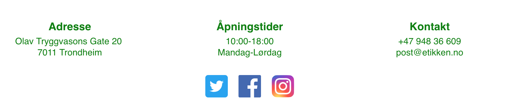Navbarelementene animeres (endrer stil) ved hover. De endrer farge til en mørkere grønnfarge, samt vises (utvides) en underline av samme grønnfarge under elementet. Denne og tekstfargen animeres ved hjelp av CSS.
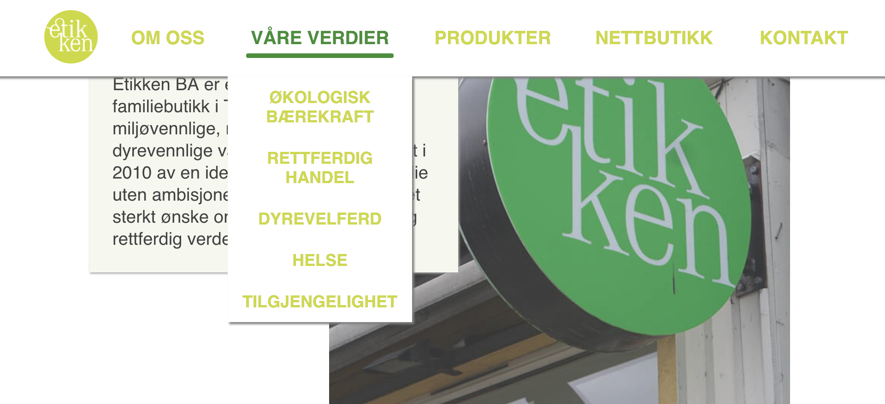Noe av det viktigste med siden var å vise åpningstidene til butikken. Disse er dermed plassert flere steder, i undersiden “Kontakt oss” og i footeren. Av brukervennlige årsaker og redusere antall klikk, er det også plassert en liten tekstboks med åpningstidene som er synlig idet brukeren kommer inn på nettsiden. Denne boksen forsvinner når du har scroller ned til selve innholdet på siden. Linkene i navbaren har, når teksten er hvit, en liten skygge. Dette gjør dem mer leselige, spesielt når de er lokalisert over hvite partier på logoen. Skyggen forsvinner gradvis etterhvert som navbaren endrer farge. Etikkens logo er også å finne i et lite format til venstre i navbaren, den skifter bakgrunnsfarge fra gjennomsiktig til lysgrønn (samme som teksten) på scrolling.
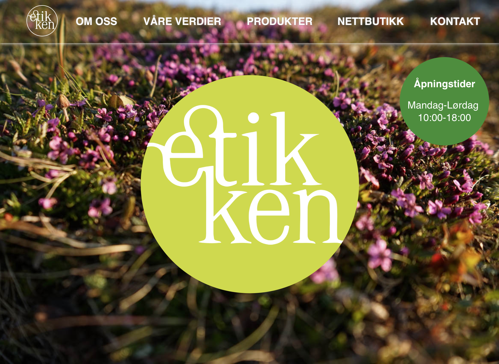De forskjellige seksjonene har også små endringer. Titlene er nå plassert inne i tekstboksen for bedre lesbarhet, da de tidligere i enkelte tilfeller ble plassert over bildene. Plassering samt størrelse av bilder og tekstboks er også justert. Den første seksjonene har nå hvit bakgrunnsfarge, før de videre alternerer mellom hvit og lys grønn/grå.
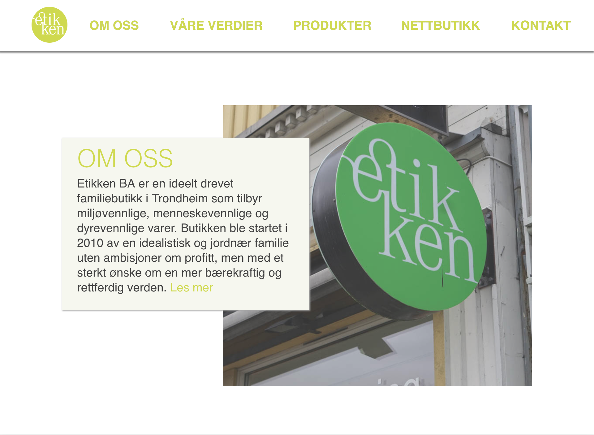For undersiden “Om oss” er bakgrunnsbildet er endret til et bilde av butikken fra utsiden i stedet for et bilde av de ansatte eller butikken fra innsiden slik det var planlagt. Dette er fordi vi ikke fikk tilgang til et passende bilde av butikken fra innsiden eller et bilde av de ansatte. Vi fikk heller ikke tilsendt tekst, så teksten er tatt fra informasjonssiden på Etikkens aktive Facebook-konto.
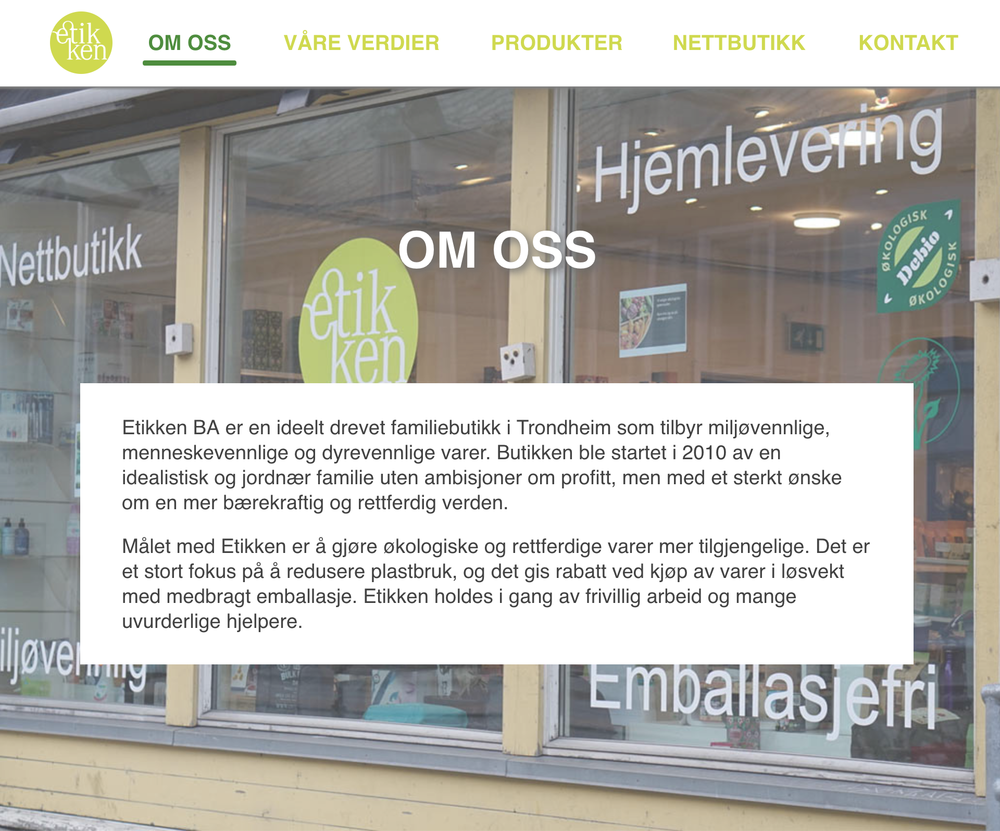Undersiden “Våre verdier” har formålet om å informere brukerne om hvilke verdier Etikken står for. Det er derfor gunstig at siden er utformet enkelt, slik at informasjonen er lett tilgjengelig og lett å lese. En tekstboks med tilhørende, høvelig bilde for hver enkelt verdi skal oppfylle dette kravet. Tanken var å plassere tekstboks og bilde annenhver for et mer dynamisk uttrykk, men dette ble snarere oppfattet som forstyrrende. Dermed er tekstboksene og bildene plassert henholdsvis under hverandre. I tillegg til at dette gir et renere uttrykk og øker lesbarheten, merket vi fordeler med tanke på koding/modularitet.
I og med at Etikken har en aktiv Facebook-konto var det mye informasjon å hente her. All tekst er hentet fra informasjonssiden deres og der ligger også lenker til videre lesning om deres såkalte “fem kjerneprinsipper”. Disse har vi valgt å plassere nederst på undersiden i en egen tekstboks.
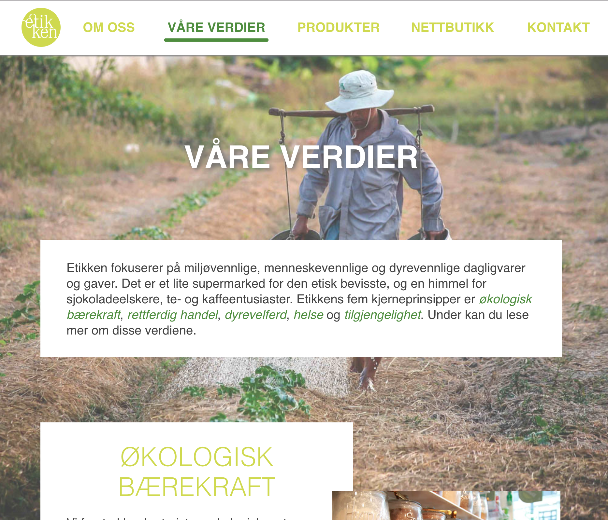Undersiden “Produkter” følger samme mal som “Våre verdier” og alle passende endringer fra “Våre verdier” følges dermed også på denne siden. All tekst på denne side er enten skrevet av oss eller tatt fra butikkens Facebook-feed. Den er derfor midlertidig og ikke tenkt å representere Etikkens faktiske produktutvalg.
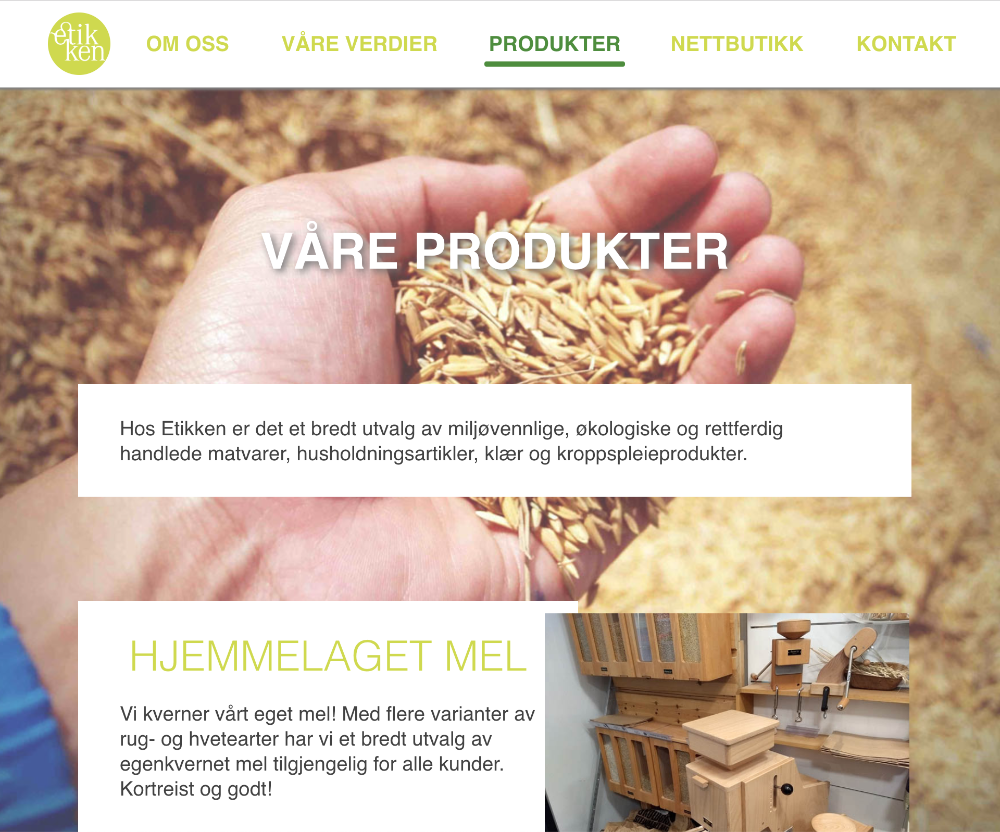Av plasshensyn har vi for undersiden “Kontakt oss” valgt å legge tekstboksen over Google Maps-boksen, i stedet for å ha dem ved siden av hverandre slik som vi opprinnelig hadde planlagt. Det var også planlagt å ha et bilde av butikken som bakgrunnsbilde her, men det ble byttet ut med to andre bilder (stock photos) for forskjellige oppløsninger. Dette var fordi det opprinnelige bildet ikke var av god nok kvalitet.
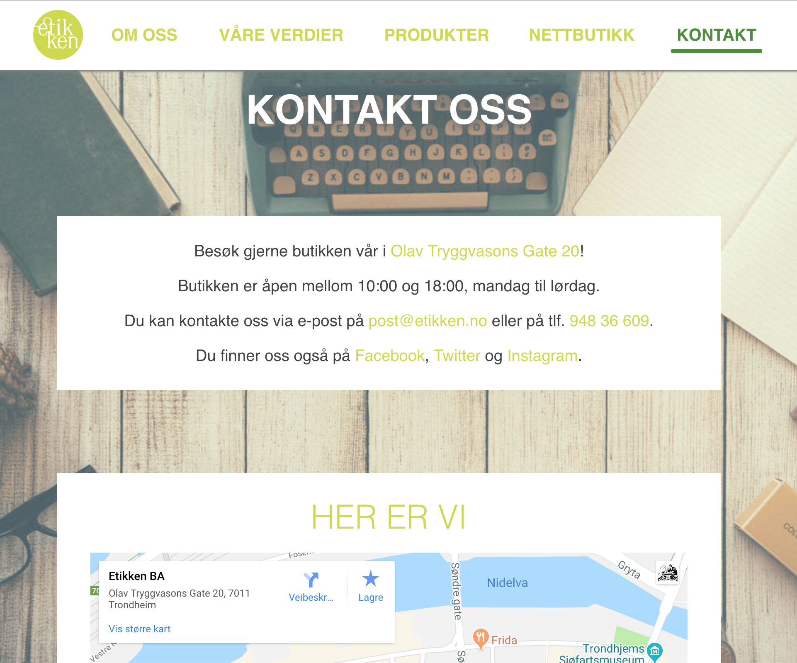Dropdown-menyen består av en rekke anchor-tags som linker til forskjellige deler av “våre verdier”-siden. Disse er vanligvis gjemt via en display: none;, men ved mouse-hover vises settes display: block; istedenfor; alt gjort via css. På forsiden bruker en gjennomsiktig grå bakgrunn som endrer farge til hvitt når man kommer lengre ned på siden. Dette utseendet er likt med slik den ser ut på undersidene, og kan sees på bildet under. Linkene på innsiden av menyen har samme klasse som linkene på navbaren, og får utseendet sitt derfra. javascript-koden som endrer fargene til dropdown-menyen ligger i index.js. Å finne et godt utseende for dropdown-menyen på forsiden var en stor utfordring, men vi er ganske fornøyde med løsningen vår. Vi prøvde først helt hvite, hvit/gjennomsiktig bakgrunn, gjennomsiktig med grense, gjennomsiktig med skygge osv. Før vi kom til den nåværende løsningen som er gjennomsiktig grått.
Vi endte opp med tre CSS-filer; common.css som inneholder alt som er felles for alle sidene, underpage.css inneholder de reglene som gjelder for alle sider untatt fremsiden og index.css har reglene som kun gjelder på fremsiden. Dette er fordi fremsiden skal se ganske annerledes ut enn undersidene, og vi synes det var naturlig og praktisk med en egen CSS-fil her. For JavaScript har menuAnimation.js blitt utvidet og endret navn til index.js da den omhandler flere funksjonaliteter knyttet utelukkende til fremsiden.
Lars-Olav: commonMenu.js inneholder funksjoner som setter inn samme footer og navbar på alle sidene. Dette er gjort relativt enkelt ved å ha HTML-blokkene til en fullstendig navbar og footer i klartekst i commonMenu.js, som så settes inn automatisk på alle sider som bruker skriptet. Det inneholder også flere funksjoner som tilpasser navbar til små skjermer. Her settes også css (farge og underline) avhengig av hvilken underside man er innpå, slik at brukerne ser hvilken side de er inne på. Funksjonen responsiveNav() styrer hamburgermenyen på mobilversjonen av siden. Dette gjøres ved å endre klassenavnet på navbar-elementet hver gang brukeren trykker på knappen for å åpne/lukke menyen, og så endre display-stilen for andre elementer automatisk ut ifra klassenavnet til navbar-elementet.
Håvard: setNavbarResize() sørger for at den responsive navbaren lukkes og deaktiveres når skjermstørrelsen endres fra mindre enn eller lik 960 px til mer enn 960px (eksempelvis når man endrer orientering på en iPad). currentSite() setter stil (samme stil som ved hover) på riktig navbar-element slik at det er tydelig hvilken underside man er inne på.
May Helen: imageExpander.js inneholder funksjoner som lar brukeren klikke på små thumbnails (brukt på products.html og values.html) for å åpne store versjoner av bildene. Dette lar oss laste inn små bilder når siden lastes, og de store bildene blir kun lastet ned hvis brukeren trykker på bildene. Dette gjør at sider som inneholder mange bilder lastes inn fortere. Det er videre mulig å bla i bildene ved hjelp av pil-ikoner. Alle disse funksjonene kjører kun på skjermer større enn 960px, da vi kun ønsker å ha denne funksjonaliteten tigjengelig nettopp her. Bildet dekker store deler av skjermen (oppimot 90vh/vw) og siden (bakgrunnen) fades ut med mørk grå gjennomsiktighet. Ikonene er animert på hover og active for brukervennlighet.

Håvard: index.js inneholder funksjoner med flere funksjonaliteter utelukkende for fremsiden. navbarChange() endrer “opacity” på navbaren, og farge på teksten og logoen i navbaren ved scrolling. Bakgrunnsfargen går fra gjennomsiktig til hvit og teksten/logoen går fra hvit/gjennomsiktig til grønn. Skyggen til navbaren endres også, hovedsakelig er det en fargeendring fra hvit til grå. Dropdownmenyen er også delvis gjennomsiktig og grå øverst på fremsiden, den justeres også i denne funksjonen slik at den blir hvit samtidig med navbaren ellers. Disse forandringene starter når en har scrollet halveis over fremsidebildet og er ferdig når en har scrollet forbi bildet. Alt dette for at fremsiden i utgangspunktet skal ha en “clean look”, men gå over til å passe med stilen til resten av siden etter at en har scrollet forbi fremsidebildet. Funksjonen imageParallax() skaper en parallaxeffekt på fremsidebildet ved at det beveger seg i en annen rate enn resten av siden. Hovedlogoens plassering må også oppdateres da det ikke er ønskelig med parallax her og dens plassering er gitt utifra fremsidebildet. setBoxHeight() er den siste hovedfunksjonalitetsfunskjonen. Denne sørger for at fremsiden får “slides-looket” vi var ute etter ved å sette høyden til seksjonene. Hver seksjon av fremsiden skal dekke hele vinduet minus høyden til navbaren. Dette skjer innenfor en vinduhøyde (460px - 1000px), hvor utenfor dette seksjonenes høyde størrelse er konstante. Denne høydeendringer skjer ved “resize”, altså endring i vinduhøyde. I tillegg til disse 3 funksjonene finnes en kontrollfunksjon, controllFunc(), som styrer funksjonene slik at de kun kjører på vindubredde > 960px. Hvis vindubredden er mindre settes standardstiler på enkeltelementer for å overkjøre eventuell tidligere kjørt JS. Til slutt finnes det også en ekstra funksjon som ikke styrer noe funksjonalitet på siden. disco(event) er tenkt på som et “easter egg” hvorpå hvis brukeren taster “etikken” eller “disco” kjøres et fargeshow hvor Etikken-logoen og åpningstiderbokser endrer farge hvert 150 ms.
Marte: slideshow.js lager et slideshow på fremsiden som skifter automatisk ut produktbildet hvert 4. sekund ved hjelp av funksjonen slideshow() . Slideshowet er satt opp under Produkter-seksjonen på fremsiden da det blir sett til å passe best en slik funksjonalitet. Vi får vist frem forskjellige produkter som Etikken tilbyr, noe som bidrer til å oppfyller målet om å opplyse besøkende av nettsiden om hva Etikken kan tilby. I tillegg skaper det et mer dynamisk og levende uttrykk på nettsiden.
Jonatan: menuExpander.js var planlagt å inneholde funksjoner som skulle la oss benytte oss av dropdown-menyer. Løsningen som ble skrevet var lang og ikke uten bugs. Det viste seg at det fantes langt mer elegante løsninger til dette problemet enn javascript-funksjonene som ble skrevet, og siden vi allerede hadde 4 .js-filer bestemte vi oss for å ta i bruk disse. Løsningen vi gikk for besto (i seg selv) kun av CSS og HTML, og det finnes derfor ingen menuExpander.js.
Nettsiden inneholder ganske mange bilder, og vi har i størst mulig grad brukt bilder av selve butikken og produktene som kunden har sendt oss eller som vi har tatt selv. Vi har vært nødt å bruke noen arkivbilder der vi ikke hadde passende bilder, og vi har da funnet disse på pexels.com og pixabay.com. Alle bilder vi ikke har tatt selv eller fått tilsendt av kunden er lagt ut til fri bruk, merket med “Free for personal and commercial use” og “No attribution required”.
Ikonene brukt til mobilmenyen (burger.svg og cross.svg) har vi laget selv, mens ikonene for sosiale medier er hentet fra Facebook, Twitter og Instagrams offisielle nettsider.
Fordi bildene er relativt store, har vi nedskalert dem til mange ulike størrelser (opptil 7 versjoner fra 480 til 2560 px i bredden). Dette er hovedsakelig for å kunne tilpasse bakgrunnsbildene til skjermstørrelsen, slik at alle brukere får servert et bilde i høy nok kvalitet uten å måtte laste ned et unødvendig stort bilde. Vi tar også vare på originalene av hvert bilde, og små bilder (logoer og ikoner) er samlet i en egen mappe.
Den endelige mappestrukturen ser i prinsippet slik ut:
| Hva | Hovedansvar |
|---|---|
| HTML og CSS | |
| index.html | Håvard |
| contact.html | Lars-Olav |
| about.html | Marte |
| values.html | May Helen |
| products.html | Jonatan |
| common.css | Alle |
| underpage.css | May Helen, Lars-Olav |
| index.css | Håvard, Marte |
| JavaScript | |
| commonMenu.js | Lars-Olav, Håvard |
| index.js | Håvard |
| slideshow.js | Marte |
| imageExpander.js | May Helen |
Lars-Olav har implementert modularitet for footer og navbar ved bruk av JavaScript og CSS. Alle sidene har samme navbar og footer (selv om navbaren styles annerledes på fremsiden), og disse settes derfor inn av commonMenu.js. En kombinasjon av felles CSS og JS gjør at vi har samme navbar og footer på alle sidene, at disse oppfører seg likt og tilpasser seg små skjermer (egen layout for skjermer smalere enn eller lik 960 px). May Helen har videre implementert imageExpander.js for å utvide thumbnail-bilder til store bilder på noen av undersidene. Nettsiden har i stor grad felles CSS i common.css og underpage.css, noe som gjør at undersidene ser like ut. Vi bruker samme klasser og IDer på HTML-elementene på de forskjellige undersidene der vi kan, noe som gjør at CSS-reglene for tekstbokser, overskrifter og bildeplassering og lignende gjenbrukes. Håvard har hatt ansvar for at CSS som endrer menyen ut fra hvilken side du er inne på også er gjort i JS i stedet for å måtte ha 1 ekstra CSS-fil per underside.
Vi har laget siden svært responsiv, og den skal støtte alle skjermstørrelser. Vi har et brudd på 960 px, der egne regler slår inn. Dette gjør at du ved en vindusbredde på 961 px eller mer får servert “desktop”-versjonen av nettsiden, men ellers får servert en komprimert versjon som fungerer bedre på små touchskjermer. Dette oppnås ved en kombinasjon av CSS, JavaScript og HTML. Nettsiden har altså 2 forskjellige oppsett som sammen gjør at den skal se bra ut uansett hvor liten eller stor skjerm brukeren har.
Vi har blant annet brukt picture-tagen i HTML for å laste inn ulike størrelser av bakgrunnsbildet avhengig av skjermstørrelse. Picture-tagen gjør at vi kan tilby et sett av bilder, spesifisere hvilket som skal brukes basert på oppløsning og laste ned kun ett av disse. Vi har prøvd å tilby bilder som passer til skjermstørrelse der vi kan, slik at siden laster så fort som mulig. Siden vil derfor laste betydelig raskere på små skjermer. Dette er spesielt nyttig siden små skjermer ofte betyr telefoner på mobildata, der brukeren ikke har ubegrenset datakvote og kunne blitt irritert om vi sløste unødig med denne kvoten.
Ved å spesifisere fontstørrelser i em stedet for px skalerer teksten bedre til det brukeren har satt som standard skriftstørrelse i nettleseren. Dette kan noen steder føre til små grafiske problemer hvis skriftstørrelsen settes veldig høyt eller bredden ekstremt liten, men det viktigste er at teksten er lesbar.
Designet på mindre vindu/skjermer er betydelig forandret i forhold til store vinduer. Felles for alle sidene er navbaren byttet ut med en hamburgermeny, denne kan nås oppe til høyre til enhver tid. Selve menyen er her sentrert med alle undersidene under hverandre, samt logoen øverst som fremdeles brukes til å nå fremsiden. Menyen gjemmer alt innhold utenom bakgrunnsbilde. Footeren sentrerer nå også elementene under hverandre.
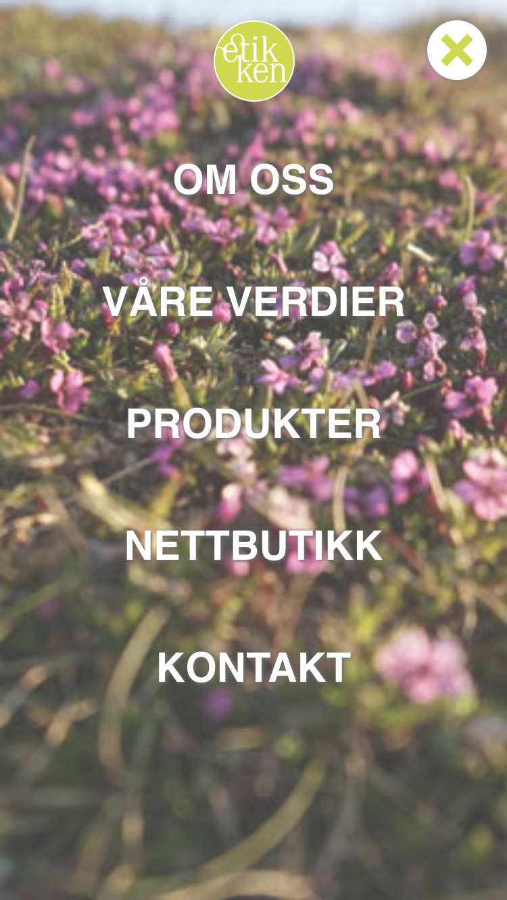 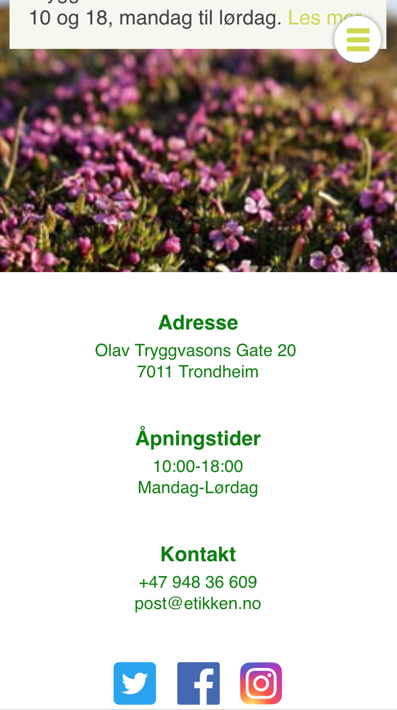På fremsiden er fremdeles det heldekkende fremsidebilde, den sentrerte logoen og åpningstide-rboksen (som er flyttet ned til høyre) det første som møter deg. Fremsidebildet er derimot gjort om til å operere som bakgrunnsbilde for fremsiden. Ved åpen hamburgermeny tillegges “opacity” til fremsidebildet for lesebarhet (denne stilen er allerede til stede på alle undersidene og trengs derfor ikke tillegges der). Tekstboksene har videre også endret seg, de dekker nå nærmest hele vinduets bredde. Bildene i hver seksjon er også fjernet. Dette med tanke på å minske hvor mye data som må nedlastes gjennom for eksempel mobildata, siden bildene kan finnes inne på de forskjellige undersidene. Høyden til seksjonene er lenger ikke bestemt av skjermhøyden men fyller ut hvor stor plass de trenger ut ifra hvor stor plass teksten tar.
Det originale designet kan for det meste gjenkjennes på undersidene. Den største endringen er at nå lastes bildene under tekstboksene. Tekstboksene dekker som på fremsiden store deler av bredden på siden.
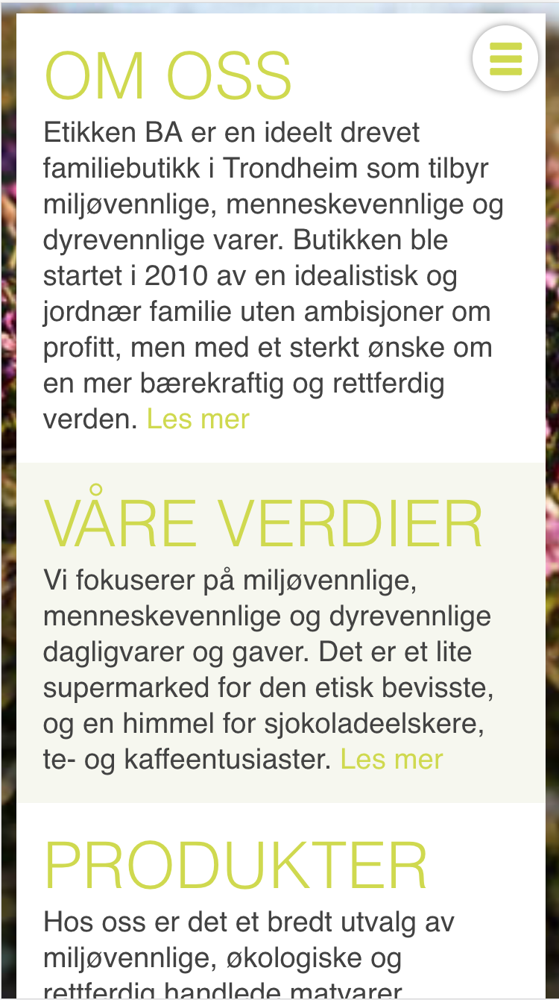 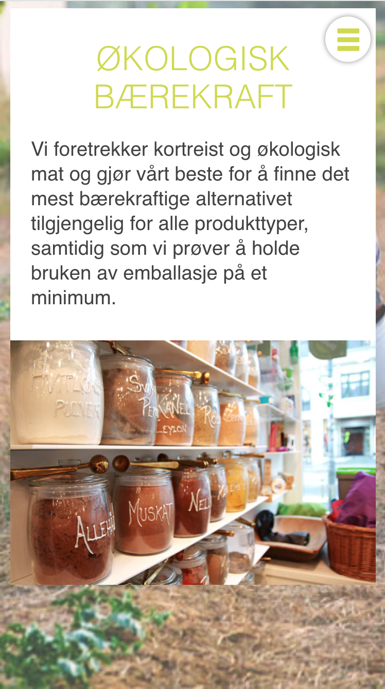